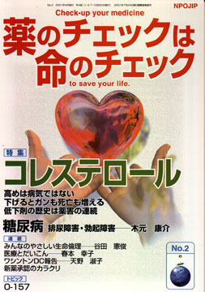

No.2 特集 コレステロール 2004年3月 第3刷発行 （絶版）
まず「コレステロールが高めは病気でない」ことをシッカリと認識してください。くわしくは後で述べます。今はコレステロールが２４０gm/dlから２８０mg/dlの間の人が一番長生きしていること、下げるとがんも死亡も増え、低すぎは大問題ということを知っておいてください（コレステロール値の単位はmg/dl、つまり１デシリットル中のミリグラム数で表します。以下単位は省きます。特別に断らない限りmg/dlのことです）。
のっけからこんなことを言ってもすぐには、納得できない人も多いでしょう。その証拠のデータを早く見たいと思われる方は、１７ページを先に読んでください。しかし、楽しみは後に残しておいて、以下をじっくりと読んでいただくのもよいでしょう。
納得できない人が多いのも無理はないのです。あまりにも「コレステロールは悪玉」「高いのは病気」と思わされてきたのですから。循環器の専門家が｢コレステロールが高いと危険｣と言う。マスメディアも専門家の情報を大きな紙面を割いて取り上げるし、タレントも「コレステロールを低くしないと」といい、テレビコマーシャルでも、果てはまんがにまで登場する。一般市民だけでなく、たいていの医師さえもコレステロールが「高いと悪い」「病気だ」と思い込まされてきたのです。
（絶版）
もくじ
■海外からのメッセージ
クリストフ・コップ氏
（国際医薬品情報誌協会ISDB代表、プレスクリル・インターナショナル編集長、フランス）
特集 コレステロール240−280が最長寿・下げるとがんになる
■高いだけで「高脂血症」とよばないで
高めが健康 病気ではない
■コレステロールの役割は？
■日本人は高めが長生き・低くするとがんも死亡も増える！
■コレステロール低下剤の歴史は、失敗・薬害の連続
■コレステロール低下剤の説明書（NPOJIPの判定付き）
・スタチン剤
■糖尿病の合併症
排尿障害と性機能障害
連載
■リレーエッセイ 医療とだいこん
■新薬承認のカラクリ メバロチンの臨床試験
■みんなのやさしい生命倫理 ２
プラセボの生命倫理（１） プラセボ効果
■ワシントンDC報告（２）
医薬品の承認審査
■Coffeeブレイク NPOJIPってなあに？（２）
■専門誌を斬る！ EBMジャーナル1月号
■読者の声
・「みのもんたと一緒にしないで！」
・「患者歴ン十年」
・「薬剤多用に疑問」 など
とりくみ
■医師（医療機関）とのつき合い方−NPOJIPへの相談事例から
こんな薬局、薬剤師はいらない
小柴胡湯の処方をめぐって
トピック
■O-157感染症に抗生物質は有効か？
提言
■NPOJIPの提言
健康人を病人に仕立て、粗悪（有害/無益）品で利益を上げる薬剤シンジケート
―これをチェックする真の監視（ビジランス）を―
■NPOJIPおよび関連の出版物案内
■出版書籍申込み用紙
■読者の意見／感想用紙
■編集後記
病院でよく聞く言葉
（特集にちなんだ言葉を簡潔に解説）忙しい人はまずここから
○コレステロール −生命維持に不可欠
○高脂血症 −220−280は正常 低コレステロールがもっと危険
○コレステロール低下剤 −日本人には必要性少ない
○狭心症の治療 −心臓への酸素不足を警告
○狭心症の予防 −禁煙、適度な運動が大切
○心筋梗塞 − 血管が詰まり、即死の危険も
○動脈硬化 − 日本人に多いのは細動脈硬化
○ステロイド − コレステロールから作られる大切なホルモン
○心筋梗塞の予防 −アスピリンが効果的
○下痢 −危険な脱水
○食中毒 −最近はサルモネラ増加
（日本経済新聞に浜六郎が掲載していたものを改変。加筆、新しく追加したものを含む）
トピックより
O-157感染症に抗生物質は有効か
腸管出血性病原性大腸菌（いわゆるO-157）は、1996年7月、学校給食から約7000人の患者発生をみた大阪府堺市の食中毒事件で一躍有名になりました。読者の方々も記憶に新しいところだろうと思います。このとき、堺市での患者のほとんどに、治療薬剤として抗生物質が積極的に使われました。そして、国や医師会等はこれを認め積極的に抗生物質の使用を進める報告を出しています。
しかし、果たしてこの治療は本当に効果があったのでしょうか。欧米での治療はどのようになされているのでしょう。混乱した現場での薬剤乱用や国際水準を逸脱した治療によって犠牲者さえ出た可能性もあります。
そこで日本と欧米の報告内容を検討してみましょう。医療専門家ではない読者の方々には多少難しい用語もあるかと思いますが、じっくり読んでください。専門家による調査とか研究とか称するものの不可思議さが理解できる事例です。
（以下、引用省略）
詳しくは本誌で。
（絶版）